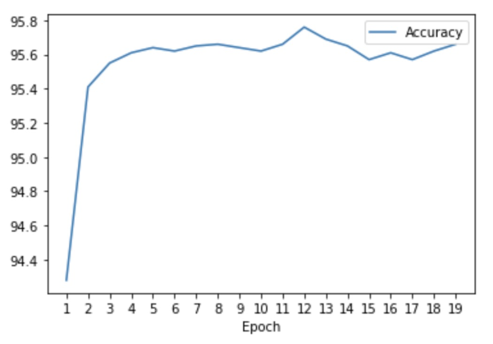
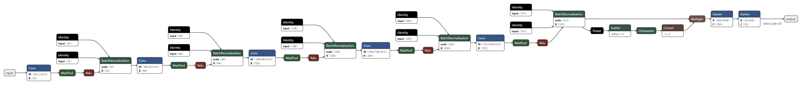

Each followed by a maxpooling layer and activated with ReLU.
Connected a DropOut layer after five convolution groups to prevent overfitting.
Flatten output, connect to fully connected layers, ended by a softmax layer


Hand Tracking
OpenCV framework and MediaPipe library.
Locate hand location, cut the current frame, preprocess the hand frame, put it to omodel, predict the result, display the predicted text on our video frame.
Although the accuracy on test data is about 95%, real time translation results are less accurate.
The backgroud lighting and shadow might be the reason of the problem.
Future Improvements
More Data Samples and Varieties?
Background noises, image augmentation.
Citation
Sign Language MNIST: Drop-In Replacement for MNIST for Hand Gesture Recognition Tasks. https://www.kaggle.com/datasets/datamunge/sign-language-mnist
Lugaresi, C., Tang, J., Nash, H., McClanahan, C., Uboweja, E., Hays, M., Zhang, F., Chang, C.L., Yong, M., Lee, J., Chang, W.T., Hua, W., Georg, M., & Grundmann, M.. MediaPipe: A Framework for Building Perception Pipelines. https://google.github.io/mediapipe/solutions/hands.html
Baeldung, How ReLU and Dropout Layers Work in CNNs, https://www.baeldung.com/cs/ml-relu-dropout-layers#:~:text=As%20a%20consequence%2C%20the%20usage,adding%20extra%20ReLUs%20increases%20linearly
Mihir Garimella, Sign Language Recognition with Advanced Computer Vision. https://towardsdatascience.com/sign-language-recognition-with-advanced-computer-vision-7b74f20f3442
Adrian Rosebrock, OpenCV Stream video to web browser page. https://pyimagesearch.com/2019/09/02/opencv-stream-video-to-web-browser-html-page/
Frequently Asked Questions
1. ReLU is very simple to calculate, as it involves only a comparison between its input and the value 0.
2. It also has a derivative of either 0 or 1, depending on whether its input is respectively negative or not.
The latter, in particular, has important implications for backpropagation during training. It means in fact that calculating the gradient of a neuron is computationally inexpensive.
Non-linear activation functions such as the sigmoidal functions, on the contrary, don’t generally have this characteristic.
As a consequence, the usage of ReLU helps to prevent the exponential growth in the computation required to operate the neural network. If the CNN scales in size, the computational cost of adding extra ReLUs increases linearly.
In order to use those in Pytorch, we create a custom dataset class using the tutorial found on their
offical website.
In order to host a website with Github, please go to tutorial found on their
offical website.